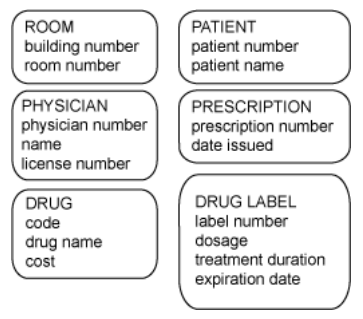

ER Modelling practice
Members of your design team have been working with the local hospital to develop a data model for their need to store information about patients, the patient's room number, the patient's doctor, drug prescriptions given, and specific drug information.
However, they all went on vacation and left you to figure out the model. They also failed to give you any of their documentation other than the entities and attributes illustrated here. Instead of going back to the hospital, which could reflect poorly on your company, you’re going to have to think about everything you know about hospitals!
Your task is in pairs to generate a list of business rules you think were used to arrive at the information shown here. Use your imagination. List 10 structural rules, 5 procedural rules, and 2 programmatic rules (rules to be addressed by computer applications in the future). State each rule as a single sentence.
Based on your set of business rules, draw the ERD.

Use this time to continue work on the health insurance company from the exercises step in lab3.
You should have a least 4 entities with a list of attributes for each, indicating the UID and the optionality of each attribute.
You should have the start of a business description for your continuous assessment. Please show it to me in this class. Start to list your entities and attributes.
Don't leave this lab without having a clear idea and first draft of business description for your continuous assessment.